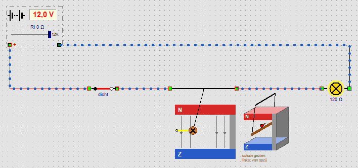

Learning path › Magnetism › Lesson 5 of 6
In lesson 1 magnets attracted or repelled each other. In lesson 2 you saw that a current makes a magnetic field itself. Put a wire carrying a current in the field of a magnet and the two fields act on each other: the wire gets a force. That force is called the Lorentz force, after the Dutch physicist Hendrik Antoon Lorentz (Nobel Prize 1902).
A copper rod, a piece of thick copper wire, hangs on two thin wires between the poles of a U-magnet, like a swing. The rod is part of the circuit: the current comes in at the left terminal, goes down one thin wire, through the rod, and back up the other thin wire to the right terminal. On the right of the part a small drawing at an angle shows this. On the left you look at it from the side, along the rod itself: there you see the rod as a small circle. The field lines run from the north pole (top) to the south pole (bottom). In the circle you see which way the current goes:

Try it with the example: the field lines go down, so your palm faces up. The current goes into the screen, so your fingers point away from you. Your thumb then points to the left: that is where the rod swings.
Reverse the current or the magnet and the force reverses. Reverse both and the force keeps the same direction.
The force is larger when
That holds when the wire lies across the field lines. If the current runs parallel to the field lines, there is no force.
The Lorentz force does a lot of work: in a loudspeaker it pushes a small coil with the cone back and forth, and in an electric motor it makes a coil turn. You will see that in the next lesson.
1. Suppose the current comes out of the screen and the north pole is at the bottom. Which way does the rod swing? Use the left-hand rule, and check with the rule about reversing twice.
2. At 12 V about 100 mA flows. How much flows at 6 V, and what happens to the force?
1. To the left. The field lines now go up (your palm faces down) and the current comes towards you (your fingers point towards you): your thumb points to the left. That fits: compared with the example both the current and the magnet are reversed, and reversing twice gives the same direction.
2. About 50 mA: the current halves, so the force halves too (F = B × I × L). The rod swings out less far.